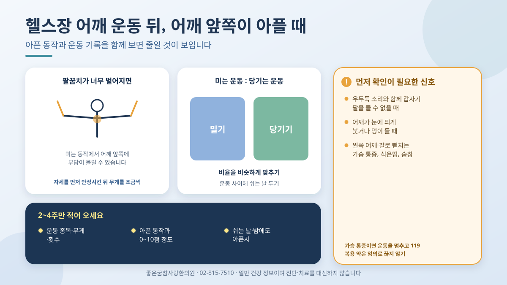

이종호 한의사 감수좋은꿈참사랑한의원 대표원장 (한의사 면허번호 19769)발행 2026-11-23 · 수정 2026-11-25
이 글의 차례
웨이트 운동 뒤 어깨 앞쪽이 아프다면, 아픈 동작의 무게와 움직이는 범위를 먼저 줄이고 어떤 동작의 어느 높이에서 아픈지 기록해 보는 것이 먼저입니다. 운동을 시작하고 무게를 조금씩 올리다 보면 어느 날부터 어깨 앞쪽이 쑤시고 팔을 들 때 걸리는 느낌이 들 수 있습니다. 근육이 힘들어서인지 다른 이유인지 구분하기 어려워 운동을 계속해도 될지 고민이 됩니다.
아픈 동작과 운동 기록을 함께 보면 무엇을 줄일지 정하기 쉬워지고, 운동 중 '뚝' 소리와 함께 팔에 힘이 빠졌다면 지켜보기보다 먼저 확인을 받습니다.
왜 이런 불편이 생길 수 있나요
- 벤치프레스나 숄더프레스처럼 미는 동작에서 팔꿈치가 몸통에서 너무 벌어지면 어깨 앞쪽에 부담이 몰릴 수 있습니다.
- 바를 가슴 가까이 깊게 내리거나 팔을 몸 뒤로 깊이 보내는 동작은 어깨 앞쪽이 길게 늘어난 상태에서 무게를 버티게 합니다.
- 날개뼈가 받쳐 주지 못한 채 팔만 들어 올리면 어깨 앞쪽 힘줄이 좁은 틈에서 반복해서 스치듯 부담을 받을 수 있습니다.
- 무게나 횟수를 짧은 기간에 크게 늘리면 근육과 힘줄이 따라오지 못하는 경우가 있습니다.
- 등 근육에 비해 가슴과 어깨 앞쪽만 많이 쓰면 어깨가 앞으로 말리기 쉽습니다.
- 잠이 부족하거나 쉬는 날이 없으면 회복이 더뎌 통증이 오래갈 수 있습니다.
먼저 이렇게 여쭙니다
- 어떤 운동을 할 때 아픈가요? 밀기 동작인지, 들어 올리기 동작인지요.
- 최근 운동 무게나 횟수를 바꾸셨나요?
- 팔을 옆으로 들 때 특정 높이에서 걸리는 느낌이 있나요?
- 운동 전후에 준비운동과 정리운동을 하시나요?
- 쉬는 날에도 아픈가요, 운동할 때만 아픈가요?
- 아픈 쪽으로 누우면 불편하거나 밤에 아파서 깬 적이 있나요?
일상에서 먼저 해 볼 수 있는 것
운동 전 10분
- 가벼운 유산소 운동으로 몸을 데운 뒤 팔을 앞뒤로 천천히 크게 돌리기를 10번씩 합니다.
- 고무 밴드를 양손으로 잡고 가슴 앞에서 좌우로 벌리며 날개뼈를 모으기를 10~15번 해 등 쪽 근육을 먼저 깨웁니다.
- 본 운동 무게의 절반쯤으로 한두 세트를 가볍게 해 보며 아픈 지점이 있는지 확인합니다.
운동하는 동안
- 아픈 동작은 잠시 빼거나, 평소 무게의 70% 정도로 줄여 아프지 않은 범위까지만 움직입니다.
- 미는 동작에서는 팔꿈치를 몸통 쪽으로 조금 모으고, 바를 내리는 깊이는 어깨 앞쪽이 당기기 전까지로 줄입니다.
- 무게를 올릴 때는 자세를 먼저 안정시킨 뒤 조금씩 올립니다.
- 미는 운동과 당기는 운동의 비율을 비슷하게 맞추거나 당기는 운동을 조금 더 합니다.
운동 뒤와 쉬는 날
- 문틀에 팔꿈치를 어깨보다 조금 낮게 대고 가슴 앞쪽을 15~20초 가볍게 늘립니다. 찌릿하면 멈춥니다.
- 운동 사이에 쉬는 날을 두어 근육이 회복할 시간을 주고, 같은 부위 운동은 이틀쯤 간격을 둡니다.
- 잠잘 때는 아픈 쪽이 위로 오게 옆으로 눕고 베개를 안아 팔을 받칩니다.
상황별 예시
- 예를 들어 퇴근 뒤 헬스장에 다니는 직장인이 몇 주 사이 벤치프레스 무게를 빠르게 올린 뒤 어깨 앞쪽이 쑤신다면, 무게를 몇 주 전 수준으로 내리고 팔꿈치 각도와 바를 내리는 깊이를 바꿔 보며 아픈 정도를 0~10점으로 적어 봅니다.
- 예를 들어 주말에 몰아서 상체 운동을 하는 분이 월요일마다 팔을 머리 위로 올리기 불편하다면, 하루에 몰아 하던 양을 주 2~3회로 나누고 당기는 운동을 함께 넣어 봅니다.
- 예를 들어 하루 종일 책상에서 일해 어깨가 앞으로 말린 분이 운동을 새로 시작했다면, 무게를 늘리기 전에 날개뼈를 모으고 가슴을 편 자세부터 몸에 익히는 편이 부담을 줄일 수 있습니다.
스스로 점검해 보세요
- 미는 동작에서 어깨 앞쪽이 찌릿하거나 쑤신다.
- 팔을 옆으로 들 때 어깨 높이 근처에서 걸리거나 아프다.
- 최근 한 달 사이 무게나 횟수를 크게 늘렸다.
- 아픈 쪽으로 누우면 불편해 자세를 바꾼다.
- 운동 다음 날 아침이 운동 직후보다 더 아프다.
- 등 운동보다 가슴·어깨 운동을 훨씬 많이 한다.
- 운동하는 날 잠이 6시간이 안 되는 경우가 많다.
한의원에서 함께 살필 수 있는 경우
- 운동 뒤 어깨 앞쪽이 뻐근하고 팔을 올릴 때 불편한 경우 운동 동작과 근육의 긴장을 함께 살핍니다.
- 쉬는 날에도 어깨가 쑤시고 잠을 설치는 경우 회복 리듬과 생활 습관을 함께 살핍니다.
- 운동 후 몸이 무겁고 피곤이 오래가는 경우 식사와 잠을 함께 살핍니다.
좋은꿈참사랑한의원에서는 첫 방문 때 어떤 운동을 어떤 무게와 횟수로 하셨는지, 언제부터 어떤 동작의 어느 높이에서 아픈지를 먼저 자세히 듣습니다. 그다음 맥부터 짚어 보고 잠과 식사, 운동 뒤 회복이 어떤지를 함께 여쭙습니다.
이어서 팔을 앞과 옆으로 드는 범위와 버티는 힘을 좌우로 비교하고 아픈 자리를 눌러 확인하며, 필요하다고 판단될 때 초음파로 어깨 앞쪽 힘줄 주변을 살핍니다. 침·약침·추나·온열 치료·체외충격파 등은 상태에 맞춰 정하고, 당분간 뺄 동작과 무게 기준, 운동을 언제 어떤 순서로 다시 늘릴지를 함께 정합니다.
평일은 저녁 8시까지 진료해 퇴근 뒤에 들르기도 합니다.
얼마나 지켜보고 언제 상담할까요
- 뻐근한 정도라면 아픈 동작을 빼거나 무게를 줄이고 1~2주 지켜보며 아픈 정도를 0~10점으로 적어 봅니다. 점수가 내려가는 흐름이면 한 주에 조금씩 무게를 되돌립니다.
- 2~3주가 지나도 같은 동작에서 계속 아프거나 운동하지 않는 날에도 쑤신다면 상담을 받아 보세요.
- 밤에 아파서 깨는 일이 일주일 넘게 이어지거나 팔을 드는 힘이 약해진 느낌이 들면 미루지 말고 확인합니다.
- 아래 신호가 있으면 지켜보지 말고 바로 진료를 받습니다.
이렇게 기록해 오시면 상담이 쉬워집니다
- 최근 2~4주 운동 종목과 무게, 횟수
- 아픈 동작과 아픈 정도를 0~10점으로 적은 것
- 쉬는 날에도 아픈지, 밤에 아파서 깨는지
- 운동 전후 준비·정리운동 여부
- 예전에 어깨를 다치거나 빠진 적이 있는지
이런 증상은 먼저 확인이 필요합니다
- 운동 중 '뚝' 소리와 함께 갑자기 팔에 힘이 빠지거나 팔을 들 수 없게 된 경우
- 어깨가 눈에 띄게 붓거나 멍이 든 경우
- 어깨가 빠지는 듯한 느낌이 들었거나 모양이 반대쪽과 달라 보이는 경우
- 팔이나 손가락으로 저림이 내려가고 손에 힘이 빠지는 경우
- 왼쪽 어깨와 팔로 뻗치는 가슴 통증, 식은땀, 숨참이 함께 있는 경우
가슴 통증이 함께 있다면 운동을 멈추고 가까운 응급실로 가세요. 다친 직후 붓기와 멍이 심하다면 영상 검사가 가능한 의료기관 확인이 먼저일 수 있습니다. 복용 중인 약은 처방한 의사와 상의 없이 줄이거나 끊지 않습니다.
관련 글
- 어깨가 아플 때 초음파로 무엇을 확인하고, 어떤 동작을 먼저 묻나요?
- 거북목과 라운드숄더는 집에서 어떤 스트레칭을 해 볼 수 있나요?
- 약침을 맞은 날 운동이나 목욕을 해도 되나요?

여쭙는 것
- 어떤 운동을 할 때 아픈가요? 밀기 동작인지, 들어 올리기 동작인지요.
- 최근 운동 무게나 횟수를 바꾸셨나요?
- 팔을 옆으로 들 때 특정 높이에서 걸리는 느낌이 있나요?
생활에서 해 볼 것
- 가벼운 유산소 운동으로 몸을 데운 뒤 팔을 앞뒤로 천천히 크게 돌리기를 10번씩 합…
- 고무 밴드를 양손으로 잡고 가슴 앞에서 좌우로 벌리며 날개뼈를 모으기를 10~15번…
- 본 운동 무게의 절반쯤으로 한두 세트를 가볍게 해 보며 아픈 지점이 있는지 확인합니다.
한의원에서 함께 살필 것
- 운동 뒤 어깨 앞쪽이 뻐근하고 팔을 올릴 때 불편한 경우 운동 동작과 근육의 긴장을…
- 쉬는 날에도 어깨가 쑤시고 잠을 설치는 경우 회복 리듬과 생활 습관을 함께 살핍니다.
- 운동 후 몸이 무겁고 피곤이 오래가는 경우 식사와 잠을 함께 살핍니다.
먼저 확인이 필요한 신호
- 운동 중 '뚝' 소리와 함께 갑자기 팔에 힘이 빠지거나 팔을 들 수 없게 된 경우
- 어깨가 눈에 띄게 붓거나 멍이 든 경우
- 어깨가 빠지는 듯한 느낌이 들었거나 모양이 반대쪽과 달라 보이는 경우
한눈에 보는 표
| 구분 | 핵심 |
|---|---|
| 여쭙는 것 | 어떤 운동을 할 때 아픈가요? 밀기 동작인지, 들어 올리기 동작인지요. 최근 운동 무게나 횟수를 바꾸셨나요? |
| 생활에서 해 볼 것 | 가벼운 유산소 운동으로 몸을 데운 뒤 팔을 앞뒤로 천천히 크게 돌리기를 10번씩 합니다. 고무 밴드를 양손으로 잡고 가슴 앞에서 좌우로 벌리며 날개뼈를 모으기를 10~15번 해 등 쪽 근육을 먼저 깨웁니다. |
| 한의원에서 함께 살필 것 | 운동 뒤 어깨 앞쪽이 뻐근하고 팔을 올릴 때 불편한 경우 운동 동작과 근육의 긴장을 함께 살핍니다. 쉬는 날에도 어깨가 쑤시고 잠을 설치는 경우 회복 리듬과 생활 습관을 함께 살핍니다. |
| 먼저 확인이 필요한 신호 | 운동 중 '뚝' 소리와 함께 갑자기 팔에 힘이 빠지거나 팔을 들 수 없게 된 경우 어깨가 눈에 띄게 붓거나 멍이 든 경우 |
자주 묻는 질문
아픈데 참고 운동을 계속해도 되나요?
뻐근한 정도라면 무게와 동작을 줄여 지켜볼 수 있지만, 날카로운 통증이나 힘이 빠지는 느낌이 있다면 쉬면서 상담해 보시길 권합니다.
아픈 쪽 어깨는 아예 쓰지 말아야 하나요?
완전히 쉬기보다 아프지 않은 범위의 가벼운 움직임은 이어 가는 경우가 많습니다. 다만 날카로운 통증이 생기는 동작은 멈추세요.
운동 전에 어떤 준비를 하면 좋나요?
가벼운 동작으로 몸을 데우고 어깨를 천천히 움직이는 정도로 시작하는 것이 부담이 적습니다.
어깨가 아플 때 다른 부위 운동은 해도 되나요?
아픈 어깨에 부담이 가지 않는 하체 운동이나 가벼운 유산소 운동은 이어 가는 경우가 많습니다. 어깨를 쓰는 동작이 섞이지 않는지 먼저 확인하세요.
좋은꿈참사랑한의원은 재진 때 지난번 이야기부터 이어서 여쭙니다. 진료시간과 예약은 오시는 길에서 확인하세요.
어디서 상담받을 수 있나요?
좋은꿈참사랑한의원은 서울 동작구 만양로2길 2 신성빌딩 3층·5층(서울 동작구 상도동, 7호선 상도역 3번 출구 근처)에 있습니다. 한의사 3명(이종호 대표원장, 조영기 수석진료원장, 정원영 진료원장)이 진료합니다. 진료시간은 평일 09:30~20:00(점심 13:00~14:00), 토·일·공휴일 09:30~15:00이며, 방문 전 전화로 확인을 권합니다. 예약은 네이버 예약, 카카오톡 상담, 전화 02-815-7510로 받습니다.
이 글은 일반적인 건강 정보이며 개인의 진단이나 치료를 대신하지 않습니다. 증상이 있거나 복용 중인 약이 있다면 진료를 통해 확인하세요. 치료 효과는 개인마다 다를 수 있습니다.
작성 기준: 일반적으로 알려져 있는 건강 정보를 참고해 정리했습니다(대표원장 감수). 증상 기록은 1~2주 동안 하루 1회, 비슷한 시간에 적어 오시면 지난 상태와 비교하기 쉽습니다.